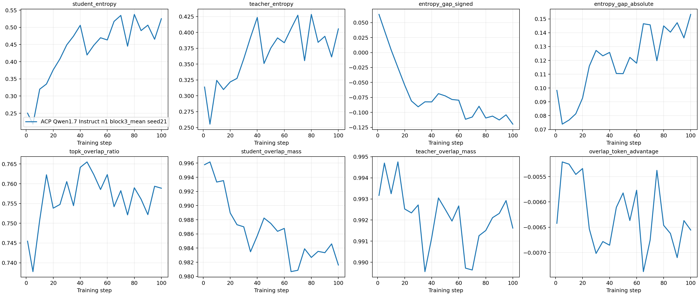
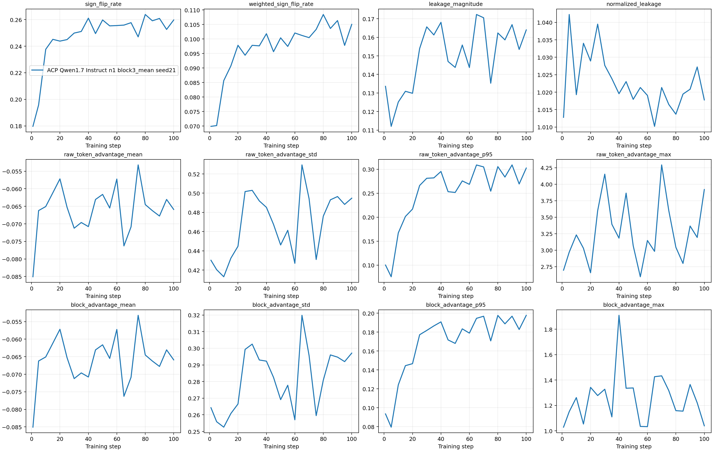
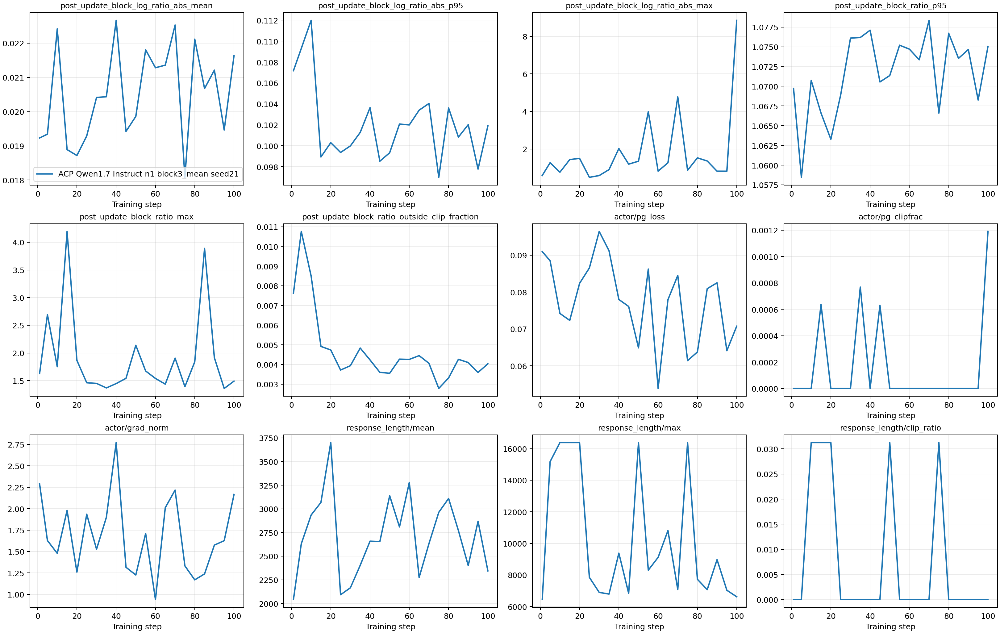
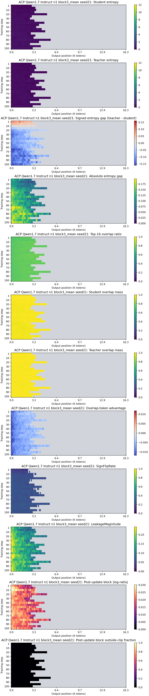
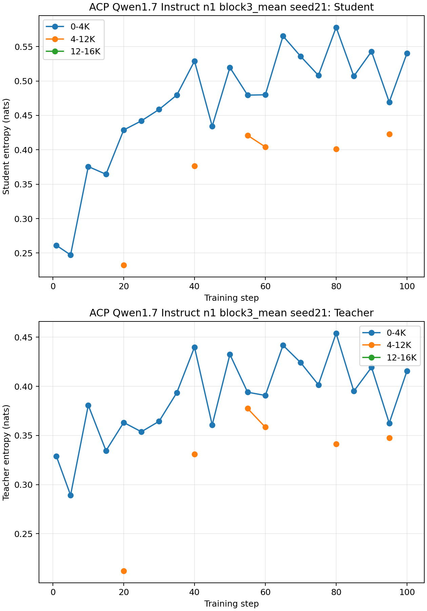

ACP Qwen1.7 Instruct n1 block3_mean seed21 OPD 诊断
本报告只呈现该次 Block3 运行的观测量，不进行 Block10 式跨机器因果分类。
Scalar records21
Position snapshots21
First diagnostic step1
Last diagnostic step100
监控指标
| Student entropy | 学生策略在有效 response token 上的平均熵及位置分布。 |
|---|---|
| Teacher entropy | 教师在相同学生前缀上的平均熵及位置分布。 |
| Signed entropy gap | Teacher entropy - Student entropy，保留方向。 |
| Absolute entropy gap | 师生熵差绝对值，衡量不匹配幅度。 |
| Top-16 overlap ratio | 师生 Top-16 token 集合的交集比例。 |
| Student/teacher overlap mass | 师生各自在共享 Top-16 token 上承载的概率质量。 |
| Overlap-token advantage | 在共享 Top-16 支撑集内分别归一化师生概率后，计算学生加权 log-ratio，再除以共享 token 数。 |
| SignFlipRate / WeightedSignFlipRate | 聚合前后 advantage 符号翻转比例及按绝对幅度加权的翻转比例。 |
| LeakageMagnitude / NormalizedLeakage | 所有有效 token 上 block advantage 与原 token advantage 的平均绝对差，以及该差值总量相对原 advantage 绝对值总量的比例。 |
| Raw-token and block advantage summaries | 分别记录 mean、std、p95 和 max，检查 Block3 聚合是否放大信号。 |
| Post-update block log-ratio | 更新后新策略相对 rollout old policy 的 block log-ratio。 |
| Outside-clip fraction | 更新后 block policy ratio 落在 PPO clip 区间外的有效 block 比例。 |
| PG loss and pre-clip grad norm | 策略梯度损失、clip fraction 与裁剪前梯度范数。 |
| Response length and truncation ratio | 平均/最大输出长度及触及 16K 上限的比例。 |
| Rollout policy drift | 由 post-update block log-ratio、policy ratio 及 outside-clip fraction 联合刻画。 |
师生分布与对齐

Block credit assignment

优化状态与 policy drift

位置级热力图

前、中、后段熵曲线
